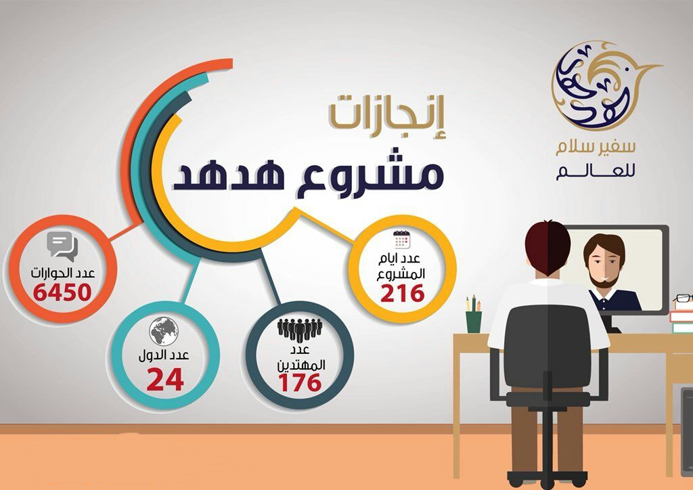

الرؤية
الريادة في صناعة إعلام دعوي عالمي يبلغ رسالة الإسلام.
الرسالة
مشروع إعلامي دعوي عالمي يهدف لتبليغ رسالة الإسلام
الأهداف
- تبليغ رسالة الاسلام عبر إبراز محاسنه وموافقته للعقول والفطر السليمة.
- تصحيح لبصورة الذهنية عن الإسلام في أذهان غير المسلمين.
- الشراكة الفعالة مع الجهات ذات الاهتمام المشترك.
- تأسيس مرجع إعلامي متعدد اللغات بمعايير عالية الجودة.
- استثمار التطورات التقنية الإعلامية في تعزيز رؤية ورسالة المؤسسة.